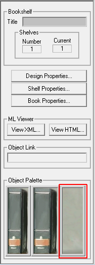
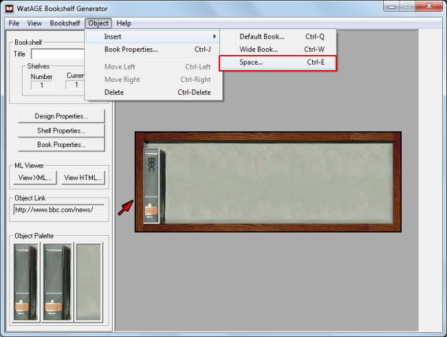

> Working with Spaces >
Adding a space
7.1. Adding a space
To add a space to a shelf:
- Select the shelf where you want to add a space.
- Do one of the following:
- Under the Tool Panel, in the Object Palette, click the icon of a space.
- On the Object menu, point to Insert, and then click Narrow (Default) book or Wide Book.
The space appears aligned to the left.
- Under the Tool Panel, in the Object Palette, click the icon of a space.